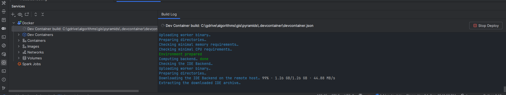
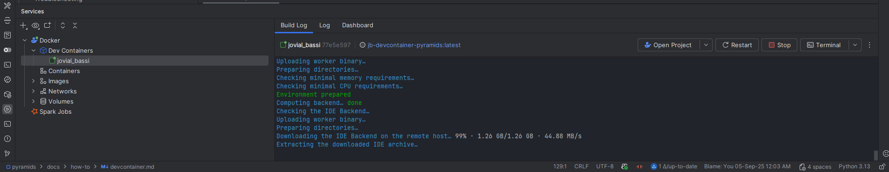

Using the Dev Container#
This guide explains how to develop this project inside a reproducible Dev Container. The Dev Container is configured to
build from the repository Dockerfile (production stage) and provisions a complete GIS stack (GDAL/PROJ); development tools are available when ENV_NAME=dev.
Key facts:
- Image is built from the Dockerfile production stage with ENV_NAME=default so default (runtime) dependencies are included.
- The Python environment lives at /opt/venv. VS Code is configured to use /opt/venv/bin/python automatically.
- GDAL/PROJ environment variables are already set inside the container.
- By default, the package is installed non-editably (production-like install). You can optionally enable editable installs
for live code reloading (see below).
- Dev tools like pytest and pre-commit are part of the Pixi dev environment. To include them by default, change ENV_NAME to dev in .devcontainer/devcontainer.json and rebuild; otherwise you can install them manually inside the container (e.g., pip install -U pytest pre-commit).
Prerequisites#
Choose one of the following: - VS Code on your machine with the “Dev Containers” extension (or "Remote - Containers"). - GitHub Codespaces (works similarly; the config is the same).
You also need Docker running if you build locally.
Open the repository in the Dev Container#
- Open the folder in VS Code.
- Run: Command Palette → "Dev Containers: Reopen in Container".
- The first run will build the image from your Dockerfile and then open the workspace in the container.
- Post-create step tries to install git hooks (
pre-commit install) ifpre-commitis available; otherwise install it (pip install pre-commit) or setENV_NAMEtodevin.devcontainer/devcontainer.jsonand rebuild.
Tip: The first build can take a while because it resolves the Pixi environment and installs GDAL/PROJ.
Python interpreter#
- VS Code is set to use:
/opt/venv/bin/python. - You can confirm in VS Code settings or by running
which python(Linux-style path inside the container):
Running tests#
- From the integrated terminal in the container:
- VS Code Testing UI is already enabled for pytest.
- If pytest is not found (because
ENV_NAME=defaultexcludes dev tools), either install it (pip install -U pytest) or setENV_NAMEtodevin.devcontainer/devcontainer.jsonand rebuild.
Working with notebooks#
- Jupyter extension is installed. Open a notebook and select the kernel at
/opt/venv/bin/pythonif not already selected.
Pre-commit hooks#
- Hooks are installed on first container create:
pre-commit install. - You can run them manually:
Editable install (optional)#
By default the Dockerfile enforces a non-editable install for a production-like environment. This means code edits in src/ may not immediately reflect in the runtime environment.
If you prefer a live dev workflow inside the container: 1. Open a terminal in the container. 2. Run:
3. Now changes undersrc/ are reflected without rebuilding the image.
Note: If you rebuild the container image, it will revert to the default non-editable install.
Rebuild and update#
- After changing dependencies (pyproject.toml), rebuild the container to capture them:
- VS Code Command Palette → "Dev Containers: Rebuild Container".
- If caching causes trouble, do a no-cache rebuild via the Dev Containers UI or remove the prior image.
Environment variables for GDAL/PROJ#
The Dockerfile’s production stage sets these for you:
- PATH=/opt/venv/bin:...
- LD_LIBRARY_PATH=/opt/venv/lib:...
- GDAL_DATA=/opt/venv/share/gdal
- PROJ_LIB=/opt/venv/share/proj
- PYTHONNOUSERSITE=1
You normally don’t need to change them.
Debugging#
- Use VS Code’s debugger with the Python extension; it will use
/opt/venv/bin/python. - For CLI scripts, add a launch configuration or use the "Run and Debug" panel.
GitHub Codespaces#
- This configuration also works in Codespaces. Open the repo in a Codespace; it will build and use the same container image settings.
Troubleshooting#
- Build is slow or fails on GDAL/PROJ:
- Ensure Docker has enough RAM/CPU.
- Try a rebuild without cache.
- Changes in code not reflected:
- Use the editable install approach above or rebuild the container.
- Disk space issues:
- Remove old images/containers or increase Docker disk allocation.
- Interpreter mismatch in VS Code:
- Set Python interpreter to
/opt/venv/bin/python(Command Palette → Python: Select Interpreter).
Use the Dev Container in PyCharm#
You can use this same Dev Container from PyCharm in two ways.
Prerequisites: - PyCharm Professional 2023.3+ (recommended 2024.1 or newer) - Docker Desktop running - Install the JetBrains plugin: "Dev Containers" (Settings → Plugins → Marketplace → search "Dev Containers" → Install)
Option A — Open the project via the Dev Containers plugin (recommended):
1. File → remote development → dev container → New dev container → select from local Project → then select the
devcontainer file .devcontainer/devcontainer.json).
2. Once you select the devcontainer file, the plugin will build the image from the Dockerfile and the Services tab
will open and display the build progress.

3. Once the build is done you can open the project in the container.

3. The plugin will build from .devcontainer/devcontainer.json (ENV_NAME=default; target is the final production stage) and open the workspace inside the container at /workspaces/<repo>.
4. PyCharm will detect the interpreter inside the container. If needed, set it explicitly to /opt/venv/bin/python:
- Settings → Project → Python Interpreter → gear icon → Add… → Dev Container → pick the running devcontainer → Interpreter path: /opt/venv/bin/python.
5. Run/Debug configurations:
- Create a Python configuration using the container interpreter.
- For tests: Settings → Tools → Python Integrated Tools → Default test runner: pytest.
- Configure pytest: Settings → Tools → Python Integrated Tools → pytest → Additional arguments: -m "not plot" -vvv.
6. Terminals opened in PyCharm will run inside the container (Tools → Terminal). Use pytest or any CLI as usual.
Option B — Attach a Docker-based remote interpreter (without the plugin):
1. Build and start the Dev Container once (e.g., via VS Code or devcontainer up) so the container exists.
2. In PyCharm: Settings → Project → Python Interpreter → gear icon → Add… → Docker.
3. Select Docker → "Container" and pick the running devcontainer container.
4. Interpreter path: /opt/venv/bin/python.
5. Apply. You can now run/debug and test within the container environment.
Notes and tips for PyCharm:
- Workspace path inside container: /workspaces/${localWorkspaceFolderBasename} (as per devcontainer.json). PyCharm will map your local project to this path automatically when using the Dev Containers plugin.
- Pre-commit hooks are installed by the container on first create (pre-commit install). You can run them in PyCharm’s terminal: pre-commit run --all-files.
- Notebooks: PyCharm Pro supports Jupyter. Select the same interpreter /opt/venv/bin/python for the notebook kernel.
- Rebuild the container after dependency changes: Tools → Dev Containers → Rebuild (or rebuild via VS Code). This ensures the image picks up changes from pyproject.toml.
- If you see missing GDAL/PROJ or shared library errors, verify the interpreter path is /opt/venv/bin/python and that the container you’re attaching to is the devcontainer defined by this repo.
What’s in the container?#
- Editor tooling: Ruff/Pylance extensions are preinstalled for VS Code; in PyCharm, use built-in inspections/formatters or plugins as desired.
- Dev tools: pytest, pre-commit, and Jupyter are available when using
ENV_NAME=devor can be installed viapipinside the container. - GIS stack: GDAL, PROJ and related libs, aligned with conda-forge packages solved by Pixi during the image build.
If you want a different balance between dev convenience and production parity (e.g., always editable installs), let us know and we can adjust the devcontainer configuration accordingly.